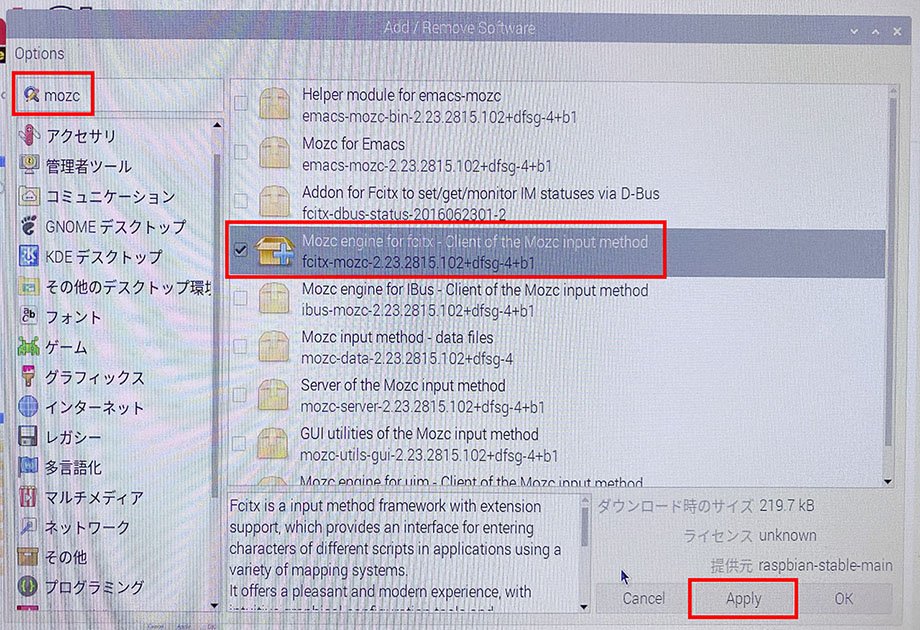
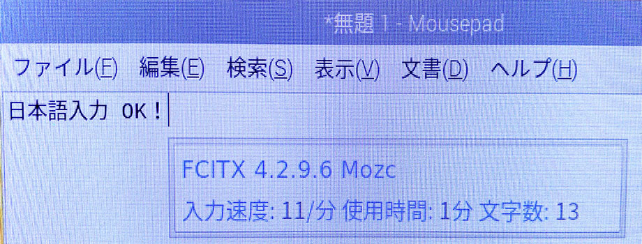

Raspbian OS に Fcitx-Mozc をインストールして日本語入力を可能にする
Raspberry Pi 4 を購入し、NOOBS による Raspbian OS 環境をセットアップした。
とりあえず起動して動くようになったので、今回は Fcitx と Mozc を使って日本語入力環境を構築する。
目次
Fcitx-Mozc とは
Fcitx と Mozc という組合せは、過去に Ubuntu 環境を構築した時にも紹介しているが、ココでも改めて。
Fcitx は入力メソッド切り替えのためのツール。「無変換」を押したら IME を切って、「変換」を押したら ON にする、みたいな動作を担うモノ。自分は普段 US キーボードを使っていて、どの OS でも「左右の Alt キーの空打ち」で IME の ON / OFF を切り替えている。Fcitx はこの設定がやりやすいので気に入っている。
Mozc は、「Google 日本語入力」のオープンソース版。自分は「Google 日本語入力」を好んで使っているので、Linux 環境では Mozc を選んでいるというワケだ。
これらは Fcitx-Mozc という単一パッケージでセットでインストールできる。
Fcitx-Mozc をインストールする
それではインストールしていこう。
スタートメニュー → 「設定」 → 「Add / Remove Software」を選択し、「mozc」などと検索する。

- Mozc engine for fcitx - Client of the Mozc input method
fcitx-mozc
コレを見つけたらチェックを入れ、「Apply」ボタンを押す。pi ユーザのパスワードを聞かれたら入力し、インストールしたら再起動する。
再起動すると入力切替のインジケータが表示されるので、Fcitx および Mozc の設定ができるようになる。お好みで IME の ON / OFF 設定やキー設定を変更してやると、思ったように使えるであろう。

以上
日本語入力環境も整い、コレでラズパイ4をデスクトップライクに使えるようになっただろう。